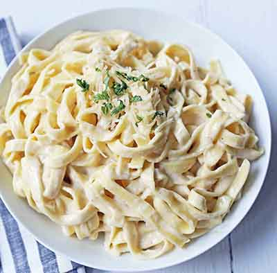

How to make my favorite food!
Recipe name: Fetticine Alfredo
ingredients and directions

Recipe description
you'll need the following ingredients
24 oz of dry fetticine pasta
1 cup of butter
3/4 pint of heavy cream
3/4 cup of grated Romano cheese
1/2 cup of grated Parmesan cheese
salt and pepper to taste
Directions
Bring a large pot of lightly salted water to a boil. Add fettuccini and cook for 8 to 10 minutes or until al dente; drain.
In a large saucepan, melt butter into cream over low heat. Add salt, pepper and garlic salt. Stir in cheese over medium heat until melted; this will thicken the sauce.
Add pasta to sauce. Use enough of the pasta so that all of the sauce is used and the pasta is thoroughly coated. Serve immediately.
Nutritional Information
Per Serving :
964 calories;
61.2 g fat;
84 g carbohydrates;
23.7 g protein;
184 mg cholesterol;
582 mg sodium
For more information, check out this site